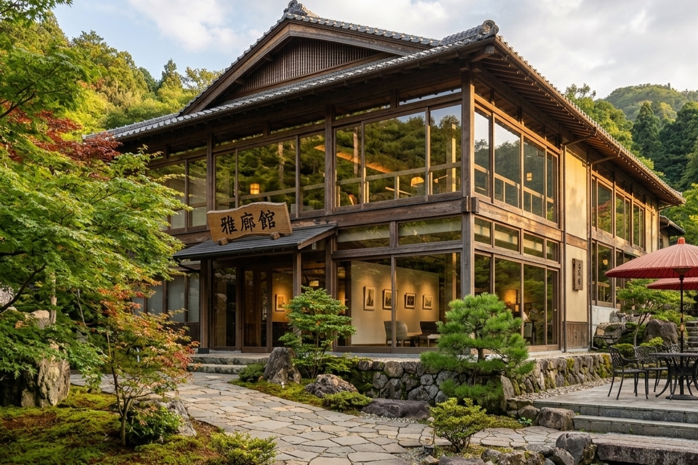
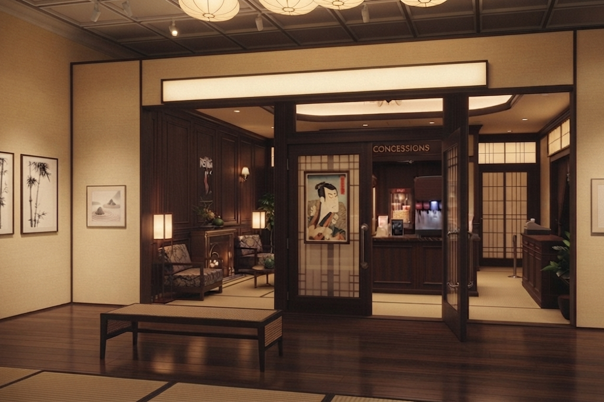
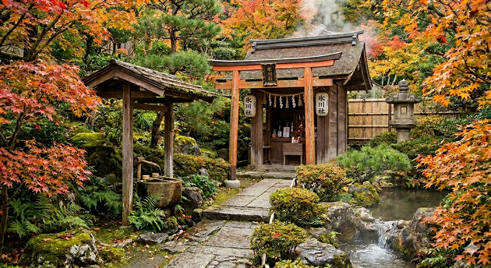
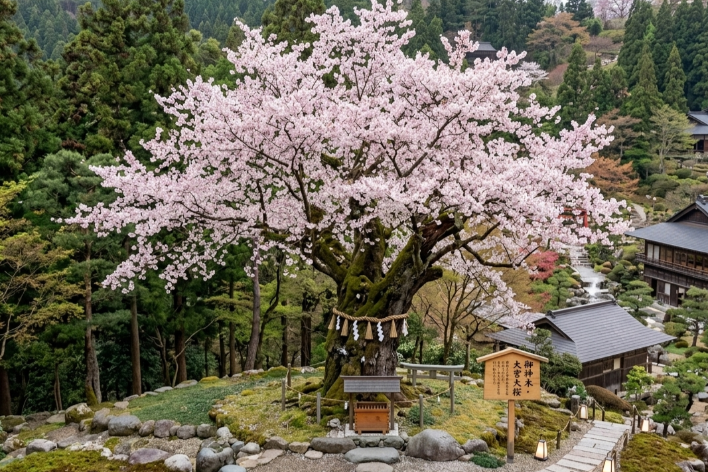
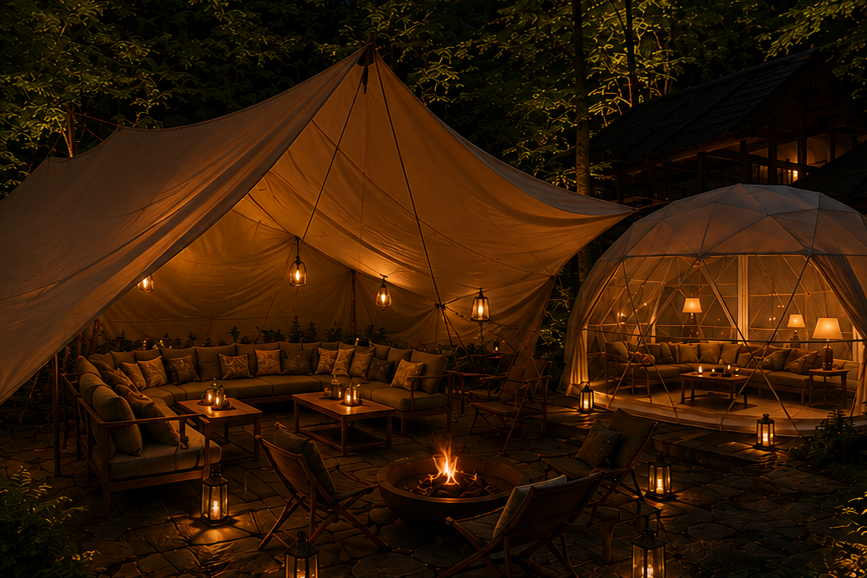

庭園
garden
庭園散策マップ
garden map

四季折々の表情を見せる広大な日本庭園。
温泉神社や湯畑、展望台、ラウンジなどを巡りながら、
ゆったりとした散策をお楽しみください。

雅廊館
庭園の中心に佇む文化施設。ギャラリーやシアター、ラウンジなどが入っています。

ギャラリー「芸彩堂」
美術品や、がしみや荘の歴史などを展示しております。

ミニシアター「映彩堂」
厳選した映画を放映しています。オールナイト上映会なども開催しております。

金のラウンジ
落ち着いた空間で、コーヒーやお酒を楽しめます。

湯畑
豊富な自家源泉から湧き出る温泉を利用した湯畑。

温泉神社
温泉の恵みに感謝を捧げる神社。お守りなども購入できます。

展望台
庭園や山々の景色、満天の星空を一望できる高台の展望スポット。

氷川大滝
落差50メートルの大きな滝。冬には氷瀑が楽しめます。

大宮大桜
樹齢400年を超える大きな山桜の御神木。 4月上旬ごろ満開の花を咲かせます。

休憩処
庭園内にある、秘密基地のような休憩所。 貸し切り風呂の待合いなどにお使いください。

木陰休憩処
ツリーハウス型の眺めのいい休憩処。

岩陰休憩処
洞窟型の落ち着く空間の休憩処。

岩窟像
大岩に掘られた石像。 300年以上前に掘られた、貴重な遺跡です。

水のラウンジ
川のせせらぎを聞きながら寛げる川床ラウンジ。

木のラウンジ
森林浴をしながら寛げるグランピング型ラウンジ。

貸切風呂
庭園内に点在している、個性豊かな貸し切り露天風呂。

紅殻の湯

乳白の湯

翡翠の湯

黄檗の湯

朽葉の湯

白泥の湯